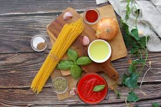
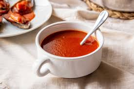
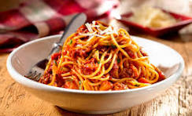

Mi Mejor Receta: Pasta con Salsa de Tomate y Perejil
Ingredientes
- 200g de pasta (spaghetti o tu preferida)
- 3 tomates maduros
- 2 dientes de ajo
- 2 cucharadas de aceite de oliva
- Sal al gusto
- Perejil fresco picado
- Queso parmesano rallado (opcional)
Pasos para cocinar
- Hierve agua en una olla grande con una pizca de sal. Agrega la pasta y cocina según las instrucciones del paquete.
- Mientras la pasta se cocina, calienta el aceite de oliva en una sartén a fuego medio.
- Agrega los ajos picados y sofríe hasta que estén dorados.
- Corta los tomates en trozos pequeños y añádelos a la sartén. Cocina durante 10 minutos hasta que se forme una salsa espesa.
- Escurre la pasta y mézclala con la salsa directamente en la sartén.
- Sirve la pasta en un plato, espolvorea perejil fresco picado y añade queso parmesano si lo deseas.
Imágenes del proceso


